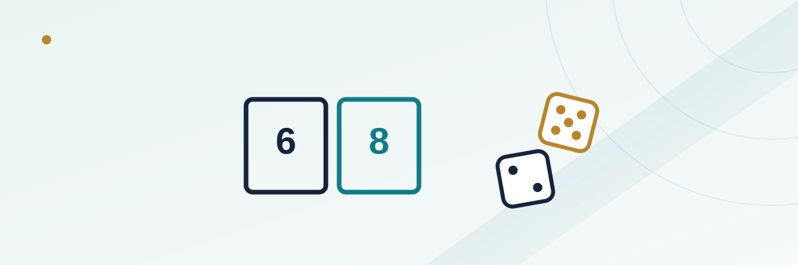

Craps Big 6 and Big 8: The Beginner Bet That Costs Extra

Big 6 and Big 8 sit right along the outside rail of a craps table, within easy reach of anyone standing a step back from the action, with a payout so simple a dealer barely has to explain it: bet that a 6 or an 8 rolls before a 7, win even money. It's often the first bet a new player makes at a craps table, because it doesn't require understanding a point, a pass line, or come-out rolls. That simplicity is exactly the problem. Right in the middle of the layout sits a nearly identical bet — a place bet on 6 or 8 — that wins on the same rolls, loses on the same rolls, and pays meaningfully better. Big 6 and Big 8 aren't a scam, but they're a textbook example of a casino charging extra for convenience.
In this guide
What the Big 6 and Big 8 bet actually is
Big 6 and Big 8 are wagers that a specific number — 6 or 8 — will be rolled before a 7 comes up. You can bet one, the other, or both at the same time, and unlike most craps bets, they're available on every roll, not just after a point is established. A dealer or a box on the layout marked "6" and "8" takes your chips directly; there's no stickman call required, no odds bet to request, and no understanding of pass-line mechanics needed. It's designed to be the easiest bet on the table to place, which is exactly why it attracts new players before they've learned the rest of the game.
The payout gap: even money vs. 7-to-6
Here's the part that doesn't get explained at the table: a place bet on 6 or 8, made in the middle of the layout through the dealer, wins or loses on the exact same rolls as Big 6 and Big 8 — a 6 or 8 wins, a 7 loses, anything else is a push with no effect. The only difference is the payout. A traditional Big 6/Big 8 bet pays 1-to-1, even money. A place bet on 6 or 8 pays 7-to-6. On a $12 bet, that's the difference between winning $12 (Big 6/8) and winning $14 (place bet) on an identical roll. Over a session of any real length, that gap compounds every single time the number hits.
The house edge, side by side
Because 6 and 8 can each be made in five ways (5-1, 1-5, 4-2, 2-4, 3-3) while 7 can be made in six ways (6-1, 1-6, 5-2, 2-5, 4-3, 3-4), there are 11 relevant combinations in total: the number hits 5 times out of those 11, and a 7 ends the bet the other 6 times. At even money, that works out to a house edge of 9.09% — one of the worst bets on the entire table, worse than the field bet and far worse than pass line odds. A place bet on 6 or 8, paid at 7-to-6, drops that same math down to a 1.52% house edge, putting it in the same range as pass line bets without odds.
| Bet | Payout | House edge |
|---|---|---|
| Pass line (with full odds) | Varies by odds offered | Can drop near 0% |
| Pass line (no odds) | 1 to 1 | ~1.41% |
| Place bet on 6 or 8 | 7 to 6 | ~1.52% |
| Field bet (standard paytable) | 1 to 1, 2 to 1 on 2/12 | ~2.7%–5.5% |
| Big 6 / Big 8 (traditional) | 1 to 1 | ~9.09% |
A worked example with real numbers
Say you bet $30 on Big 8 and $30 on a place bet on 8 over the same stretch of 11 decisions, matching the long-run ratio of hits to misses. The 8 hits 5 times and a 7 ends the bet 6 times. Big 8 at even money: five wins of $30 each ($150) minus six losses of $30 each ($180), a net loss of $30 across 11 decisions. The place bet on 8 at 7-to-6: five wins of $35 each ($175) minus six losses of $30 each ($180), a net loss of only $5 across the same 11 decisions. Same rolls, same dice, a $25 difference in outcome purely from which box you put your chips in.
Why it sits on the rail instead of the middle of the table
Big 6 and Big 8 exist as a self-service bet specifically because it's approachable: no odds request, no dealer explanation of "working" versus "off," no minimum knowledge of how a point gets established. Casinos have every incentive to keep an easy, high-margin bet available to players who haven't learned the table yet, and the rail placement reinforces that it's a bet you can make without engaging with the rest of the game. None of that makes it dishonest — the payout is posted, and the odds are exactly what they claim to be. It's simply priced for convenience, the same way a hotel minibar charges more for a soda than the gas station across the street.
Some modern tables have closed the gap
A growing number of casinos, particularly on newer or renovated tables, now pay Big 6 and Big 8 at 7-to-6 instead of even money, matching the place bet payout exactly and erasing the house-edge gap entirely. There's no way to tell from across the room — you have to check the printed payout on the felt itself or ask the dealer before betting. If a table pays Big 6/Big 8 at 7-to-6, there's no mathematical reason to prefer the middle-of-table place bet over the rail version; if it pays even money, the place bet is strictly better every time the numbers are available to you.
Common mistakes
- Assuming Big 6/Big 8 and place bets on 6/8 are just different names for the same thing. They settle identically but can pay very differently depending on the house's posted rate.
- Not checking the payout before betting. A 1-to-1 felt marking versus a 7-to-6 marking is the entire difference between a mediocre bet and a bad one — it's printed right on the table if you look.
- Betting Big 6/Big 8 purely for simplicity once you already understand place bets. Once you know how to request a place bet through the dealer, there's no remaining reason to default to the rail version at a table paying even money.
For how place bets fit alongside the rest of the layout, see our guide on craps place bets, and for the full math behind how house edge gets calculated across casino games generally, see how house edge works.
Frequently asked questions
Is Big 6/Big 8 a bad bet at every casino?
Not universally. Some modern tables pay it at 7-to-6, matching a place bet on the same numbers and erasing the house-edge gap. Check the payout printed on the felt before assuming it's the worse option.
Can I make both Big 6 and Big 8 at the same time?
Yes. They're independent bets settled by whichever number comes up first — a 6, an 8, or a 7 that loses both at once. There's no rule limiting you to just one.
Does Big 6/Big 8 require a point to be established first?
No. Unlike place bets, which are typically made once a point is set, Big 6 and Big 8 can be wagered on any roll, including the come-out roll, since they aren't tied to pass-line mechanics.
Why don't casinos just remove the worse-paying version?
Because it's profitable. An easy-to-understand bet with a 9.09% house edge, placed directly by the player without dealer involvement, is valuable enough to the casino that there's little incentive to phase it out where it still pays even money.